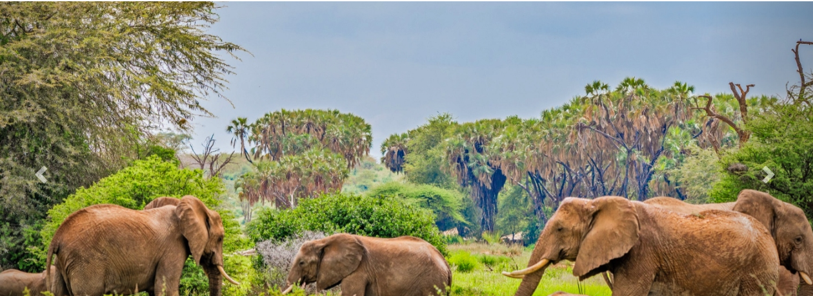

Masai Mara National Reserve

The Masai Mara National Reserve is renowned for its abundant wildlife, including the Big Five (lion, leopard, elephant, buffalo, and rhinoceros). Safari drives in this reserve offer unforgettable experiences amidst the vast savannah landscapes.
Charge per day: $100
Amboseli National Park
Amboseli National Park is famous for its stunning views of Mount Kilimanjaro and large herds of elephants. Safari tours here provide opportunities to witness diverse wildlife against the backdrop of Africa's highest peak.
Charge per day: $80
Samburu National Reserve
Charge per day: $90
Lake Nakuru National Park

Charge per day: $75